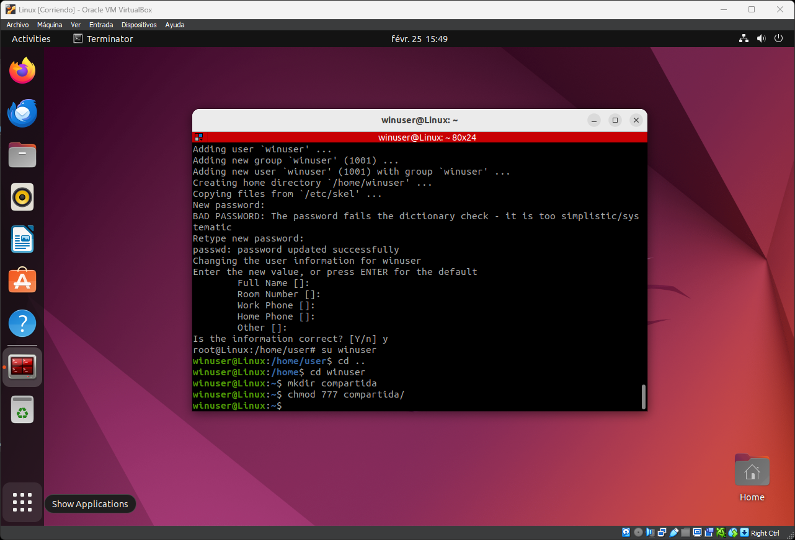

Arranque de la Maquina Virtual de Linux
Abriremos Virtual Box y arracaremos la maquina virtual de Linux anteriormente creada, dandole doble clic.

Abriremos Virtual Box y arracaremos la maquina virtual de Linux anteriormente creada, dandole doble clic.
Iniciaremos sesion con las credenciadas que asociamos anteriormente.
Una vez dentro encontraremos una serie de programas en la barra lateral, clicaremos sobre la bolsa naraja llamado Ubuntu Software. Una vez abierto clicaremos arriba a la derecha, sobre el apartado Updates.Clicaremos sobre el boton verde de Update All, para descargar las actualizaciones.
Tendremos un problema a la hora de abrir la terminal por defecto ya que nos encontramos en una Maquina Virtual. La solucion sera buscar y descargar una nueva terminal, en nuestro caso usaremos Terminator. En el buscador pondremos su nombre y la descargaremos clicando en el boton verde install. Una vez que se haya instalado podremos cerrar la ventana de Ubuntu Software.
Abriremos terminator presionando la tecla de windows y buscando entre las aplicaciones instaladas, una vez abierto escribiremos los siguientes comandos.
su //cambiamos a root, sera necesario introducir la contraseña de usuario del principio
apt upgrade //en caso de que nos pregunte siempre escribiremos s o y , pulsaremos enter
apt upgrade //volveremos a comprobar las actualizaciones por si quedara alguna por hacer

Con los siguientes comandos instalaremos samba y agregaremos un nuevo usuario llamado winuser. Al crear este nuevo usuario nos pedira crear una nueva contraseña recomiendo que para evitar equivocaciones utilicemos la misma que hemos usado al crear la maquina virtual de linux en nuestro caso 0123456789. Despues de esto nos pedira que rellenemos diferentes campos, en mi caso no pondre nada, podeis rellenarlo como convengais.
apt install samba //Para instalar samba
adduser winuser//Agregar nuevo usuario

Con los siguientes comandos instalaremos samba y agregaremos un nuevo usuario llamado winuser. Al crear este nuevo usuario nos pedira crear una nueva contraseña recomiendo que para evitar equivocaciones utilicemos la misma que hemos usado al crear la maquina virtual de linux en nuestro caso 0123456789.
apt install samba //Para instalar samba
adduser winuser//Agregar nuevo usuario
